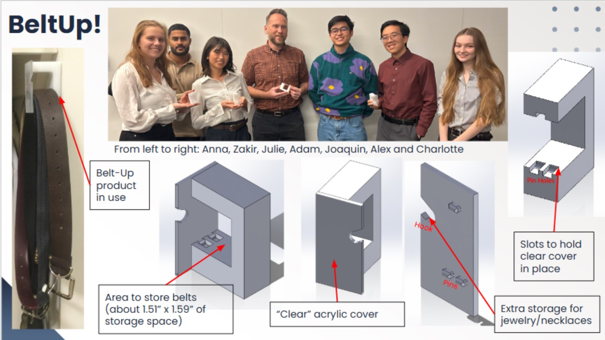
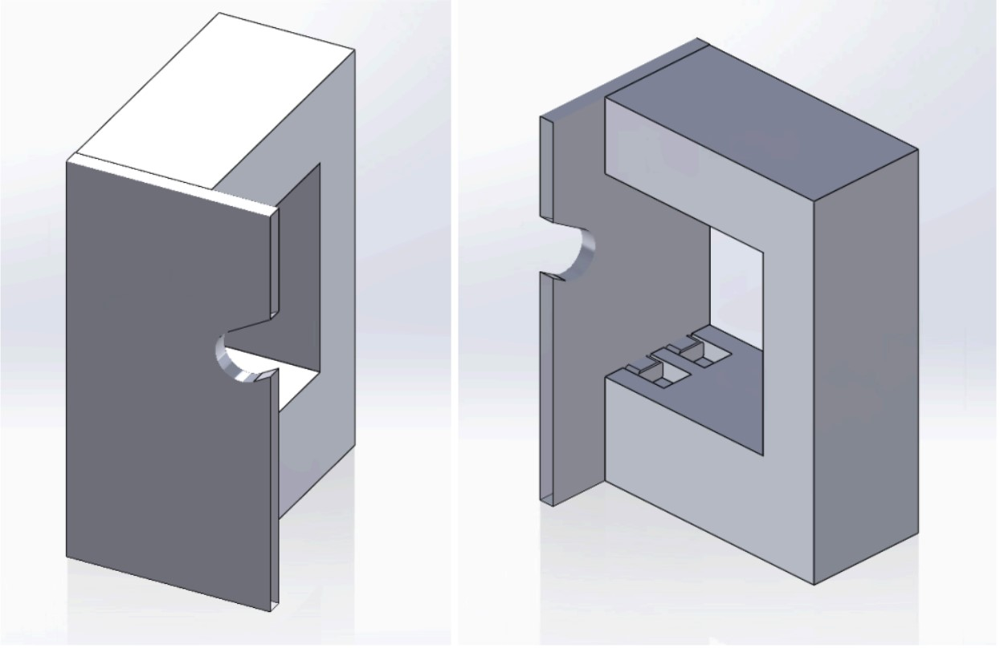

Project Overview
My team and I developed a product designed for efficient belt storage and a fully automated manufacturing workflow in Boston University’s Automated Design and Manufacturing Lab (ADML). The system integrates automated tray conveyance, raw stock loading, CNC milling, and final part assembly. Below is a time-lapse capturing the complete process.

My Contributions
- Programmed CNC machines using SolidWorks CAM, generated toolpaths, and optimized machining for accuracy and efficiency.
- Programmed robotic arms and coordinated their motion with CNC processes.
- Planned the overall workflow to ensure smooth, reliable, and optimal system performance.
Final Product Image

CAM Simulations
Simulation videos of machining the parts: